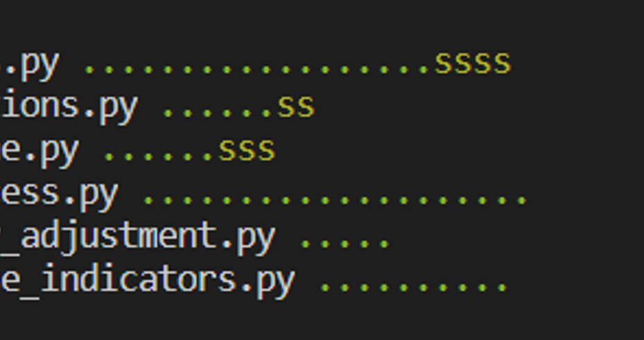

How to write good tests quickly and efficiently
Mitch Edmunds
Some of my favourite views…

Tuscan Hills, Italy

Poly Joke Beach, Cornwall

A passing test suite
Testing is time consuming
Testing is time WELL SPENT
Always code as if the guy who ends up maintaining your code will be a violent psychopath who knows where you live.
— Martin Golding
Testing is a skill
- Read a book or some blog posts on the topic
- Getting Started With Testing in Python - Real Python
- Python testing with pytest - Brian Okken
- Read the basics of the pytest documentation
- Read some tests in a Python library that you like
- Write tests!
Testing will make you a better programmer
Testing is documentation
Readability counts.
Indeed, the ratio of time spent reading versus writing is well over 10 to 1. We are constantly reading old code as part of the effort to write new code. …Therefore, making it easy to read makes it easier to write.
— Robert C. Martin, Clean Code: A Handbook of Agile Software Craftsmanship
Basics
Structure
- Your tests should live in a directory at the top level of the project
- Tests are grouped into modules in the test directory
- The test directory should be a mirror of your source directory
- Tests can be further grouped using test classes
Naming
- Test modules should start with test_
- So should your test functions
- Name should be descriptive enough so you know what the test is
- Don’t worry if your test function names are long
- Make it nice for pytest output
Function naming
- Long and descriptive
- Include function name
Class and function naming
- No need to repeat the function name in the test functions
- Comes through from the class name
Parameterised test naming
Avoid repetition
Bad example

Good example
Assert your authority
- The main component of any test is the
assertstatement- Tests whether some condition is True or False
pytestuses the built-inassertfor universal testing of native Python objects- External libraries may provide their own assert functions e.g.
assert_frame_equalinpandasassert_approx_df_equalityinchispa(for Spark)
A basic test
def to_snake_case(words: Sequence[str]) -> str:
return '_'.join(words)
def test_to_snake_case():
test_input = ['talk', 'to', 'the', 'hand']
result = to_snake_case(test_input)
assert result == 'talk_to_the_hand'
Function
Test function
Input
Test result
Assert test result equals expected result
How do you know what to test? (1)
Positive testing
Edge cases
Coverage
Negative testing
Positive Testing
Does the function have the expected output?
Edge Cases
“An uncommon or odd occurrence.”
“Never allow the same bug to bite you twice.”
— Steve Maguire
Coverage
Test for all relevant combinations of parameters
Negative testing
Put yourself in the users’ shoes
Devs watching QA test the product pic.twitter.com/uuLTButB3x
— sanja zakovska üå± (@sanjazakovska) January 22, 2021
How do you know what to test? (2)
Numbers — try:
- Positives
- Negatives
- Zeros
- NaNs
Data types — try:
- Types you expect
- Types you don’t expect - do they fail as expected?
Priorities
- Test the most complex or vulnerable parts of your code first
- Focus on realistic use cases first
Test data
- Only use the minimum amount of test data needed to properly satisfy the test case.
- If it’s a dataframe, only include columns you need.
- For generalised functions, generalise the test data.
- Hard code your data where possible.
- Keep the test data close to the test.
- If difficult - maybe the function is doing too much.
How to layout your data
@pytest.fixture
def input_df_pandas():
"""Return simple pandas input df for index method tests."""
return create_dataframe([
('prices', 'base_prices', 'quantity', 'base_quantity'),
(2.46, 2.46, 17.0, 16.6),
(7.32, 7.2, 5.3, 5.4),
(1.13, 1.1, 2.1, 2.1),
(12.39, 11.2, 12.9, 13.3),
(6.63, 6.8, 7.2, 7.4),
])
Data sources
- Unit tests - your own head
- Component tests - get the business area to help
- Mocking - use a fake data generator (Faker)
Using fixtures
@pytest.fixture
def my_fixture():
return value
conftest.py
- Sits in the top level of your tests directory
- (but can sit at any level)
- Contains fixtures you want to share throughout your whole test suite
Fixture scope
Particularly useful for resource intensive setup
@pytest.fixture(scope="session")
def spark_session():
"""Set up spark session fixture."""
print('Setting up test spark session')
os.environ['PYSPARK_PYTHON'] = '/usr/local/bin/python3'
suppress_py4j_logging()
return (
SparkSession
.builder
.master("local[2]")
.appName("cprices_test_context")
.config("spark.sql.shuffle.partitions", 1)
# .config("spark.jars", jar_path)
# This stops progress bars appearing in the console whilst running
.config('spark.ui.showConsoleProgress', 'false')
.getOrCreate()
)
Fixture functions
- Define using a closure or inner function
@pytest.fixture
def to_spark(spark_session):
"""Convert pandas df to spark."""
def _(df: pd.DataFrame):
return spark_session.createDataFrame(df)
return _
- Use
input_df_pandasfrom before
@pytest.fixture
def input_df(to_spark, input_df_pandas):
"""Return simple spark input df for index method tests."""
return to_spark(input_df_pandas)
Common pitfalls
- Grouping tests by class but forgetting to add
selfto parameters - Forgetting to declare something as a fixture
- Doing too much - cut your functions down.
Rules that you can break
Max line length
Docstring conventions
Not being DRY
Test shells üêö
Write a test shell so you know to come back to it
class TestMyFunc:
"""Group of tests for my_func."""
@pytest.mark.skip(reason="test shell")
def test_my_func(self):
"""Test for my_func."""
pass
Snakes in the grass üêç
Mark your test shells as skip so that you can see where you have missing tests at a glance.
Parametrising Tests
Running the same test for multiple sets of inputs and outputs
Simple case
@pytest.mark.parametrize(
'digits,expected',
[(3, 5.786) (1, 5.8), (0, 6), (8, 5.78646523)]
)
def test_round(digits, expected):
assert round(5.78646523, digits) == expected
Using built in pytest.mark.parametrize
Not very pretty or readable
More complicated cases
Named test cases
Parametrising fixtures
Mixing fixtures with other types
Variable number of parameters
Check out mitches-got-glitches/testing-tips for more info and examples.
Example
@parametrize_cases(
Case(
label="carli_fixed_base",
index_method='carli',
base_price_method='fixed_base',
expout='large_output_carli_fixed_base.csv',
),
Case(
label="dutot_fixed_base",
index_method='dutot',
base_price_method='fixed_base',
expout='large_output_dutot_fixed_base.csv',
),
Case(
label="jevons_fixed_base",
index_method='jevons',
base_price_method='fixed_base',
expout='large_output_jevons_fixed_base.csv',
),
Case(
label="laspeyres_fixed_base",
index_method='laspeyres',
base_price_method='fixed_base',
expout='large_output_laspeyres_fixed_base.csv',
),
Case(
label="paasche_fixed_base",
index_method='paasche',
base_price_method='fixed_base',
expout='large_output_paasche_fixed_base.csv',
),
Case(
label="fisher_fixed_base",
index_method='fisher',
base_price_method='fixed_base',
expout='large_output_fisher_fixed_base.csv',
),
Case(
label="tornqvist_fixed_base",
index_method='tornqvist',
base_price_method='fixed_base',
expout='large_output_tornqvist_fixed_base.csv',
),
Case(
label="carli_chained",
index_method='carli',
base_price_method='chained',
expout='large_output_carli_chained.csv',
),
Case(
label="dutot_chained",
index_method='dutot',
base_price_method='chained',
expout='large_output_dutot_chained.csv',
),
Case(
label="jevons_chained",
index_method='jevons',
base_price_method='chained',
expout='large_output_jevons_chained.csv',
),
Case(
label="jevons_bilateral",
index_method='jevons',
base_price_method='bilateral',
expout='large_output_jevons_bilateral.csv',
),
Case(
label="laspeyres_bilateral",
index_method='laspeyres',
base_price_method='bilateral',
expout='large_output_laspeyres_bilateral.csv',
),
Case(
label="paasche_bilateral",
index_method='paasche',
base_price_method='bilateral',
expout='large_output_paasche_bilateral.csv',
),
Case(
label="fisher_bilateral",
index_method='fisher',
base_price_method='bilateral',
expout='large_output_fisher_bilateral.csv',
),
Case(
label="tornqvist_bilateral",
index_method='tornqvist',
base_price_method='bilateral',
expout='large_output_tornqvist_bilateral.csv',
),
Case(
label="jevons_fixed_base_with_rebase",
index_method='jevons',
base_price_method='fixed_base_with_rebase',
expout='large_output_jevons_rebased_unchained.csv',
),
Case(
label="tornqvist_fixed_base_with_rebase",
index_method='tornqvist',
base_price_method='fixed_base_with_rebase',
expout='large_output_tornqvist_rebased_unchained.csv',
),
)
def test_index_scenarios(
input_data_large,
index_method,
base_price_method,
expout,
filename_to_pandas,
):
"""Test for all different combinations of index method."""
expected_output = filename_to_pandas(expout)
actual_output = calculate_index(
input_data_large,
date_col='month',
levels=['group', 'id'],
base_price_method=base_price_method,
index_method=index_method,
)
assert_frame_equal(actual_output.reset_index(), expected_output)
Final tips and tricks
- Use the CSV to Python tuple converter file
- Use VS Code snippets
- Use VS code keyboard shortcuts
- Bash bindings
- Use VS code!!
VS Code
Keyboard Shortcuts
Copy lines - SHIFT + ALT + Up/Down Arrow
Select every occurrence

Replace all within selection
CTRL + H then ALT + L
Multiple cursors - ALT + click
Multiple cursors - keyboard edition
CTRL + ALT + up/down arrow

Column box selection - ALT + SHIFT + drag mouse
VS Code
Snippets
Test shell

Parametrising fixtures

Bash bindings
Add these to your .bashrc
bind '"\e[A": history-search-backward'
bind '"\e[B": history-search-forward'
bind '"\eOA": history-search-backward'
bind '"\eOB": history-search-forward'

Questions
Additional resources
Quality Assurance of Code for Analysis and Research
— Best Practice and Impact team